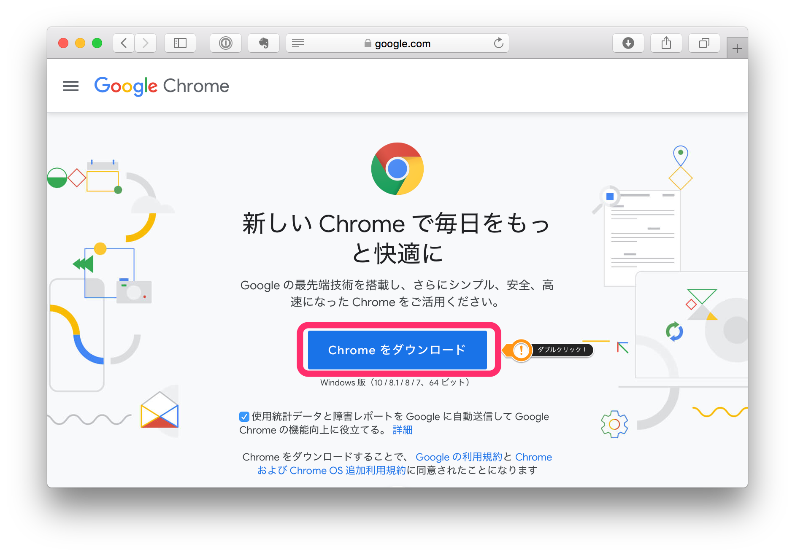

Google Classroomに参加する
対面授業が実施困難な時間中は、Google Classroomを使って担任からの連絡や教科担当者とのやりとりを行います。 担任の先生とGoogle Meetで面談することもありますし、授業では、シラバスや課題の配布に使うこともあります。準備をしておいてください。
スマホアプリを持っていない人は アプリのインストール からインストールしてください。
パソコンを使ってうまくいかない人は Google Chromeのインストール からGoogle Chromeをインストールしてください。
Classroomに参加
招待メールから参加する方法と、クラスコードから参加する方法があります。どちらでも同じようにClassroomに参加することができます。
招待メールから参加する
担任の先生や教科担当の先生から、以下のような招待メールが来れば「参加」ボタンを押してください。それで参加が完了します。
クラスコードから参加する
「クラスコード」と呼ばれる数文字の英数字を知っていれば、「クラスコード」を使って参加することもできます。 担任の先生からの連絡に使うClassroomなどは「クラスコード」の連絡を受けているかもしれません。 PCでGoogle Classroomにアクセスするか、スマホでGoogle Classroomアプリを立ち上げてください。
PCではGoogle Classroomを開いて「＋」ボタンをクリックしてください。「クラスに参加」を選択するとクラスコードを入力する画面になりますので、先生から聞いたクラスコードを入力してください。
スマホではGoogle Classroomアプリを開いて右下にある「＋」ボタンをタップしてください。「クラスに参加」を選択するとクラスコードを入力する画面になりますので、先生から聞いたクラスコードを入力してください。
アプリのインストール
パソコン
パソコンではアプリをインストール必要はありません。Google Classroomにアクセスしてください。 Googleアカウントが聞かれたら、神戸高専のGoogleアカウントでログインしてください。個人で持っているGoogleアカウントでログインしないように気をつけてください。
iOS(iPhone, iPad)
iOSを使っている人は以下のリンクから入手してください。 App Storeで「Google Classroom」で検索しても見つかると思います。
Android
Androidを使っている人は以下のリンクから入手してください。 Google Play Storeで「Google Classroom」で検索しても見つかると思います。
パソコンの準備
スマホでもGoogle ClassroomやGoogle Meetは利用できますが、スマホの小さい画面だと資料も見辛いですし、長時間Meetに接続しているとバッテリーの消費が大きいですので、可能であればパソコンを準備していただけると、より快適に授業が受講できます。 新着情報の確認にはスマホが便利かと思いますが、Meetでの受講の際にはできるだけ大きな画面のパソコンを用意して受講していただければと思います。
Google Chromeのインストール
多くの人はインターネットをする時にInternet Explorerを使っているかと思います。Internet Explorerのようなアプリを「ブラウザ」といいますが、Google MeetはInternet Explorerではうまく動作しない事があるようです。Google Classroomを開発しているGoogle社が開発している「Google Chrome」というブラウザ（Androidスマホを持っている人はお馴染みですね）だと、不具合が少ないようですので、「Google Chrome」を使ってみてください。
下のアイコンがGoogle Chromeのアイコンです。このアイコンのアプリを起動しましょう。
インストールされていなければ、以下の手順でインストールしてください。
- Google Chromeのインストールにアクセスして「Chromeをダウンロード」をクリックしてください。
 - ダウンロードするか確認されたら「実行」または「保存」をクリックしてください。
- 2で「保存」を選択した場合、「ダウンロード」フォルダにインストールするためのファイルが保存されていますので、それをダブルクリックしてください。
- インストールが終わったらGoogle Chromeを起動してください。
- (Windows 7の場合) インストールが無事に終了すれば、Google Chromeが開きます
- (Windows 8の場合) 「ようこそ」という画面が立ち上がれば、「次へ」をクリックしてGoogle Chromeを選択してください
- (Windows 10の場合) インストールが無事に終了すれば、Google Chromeが開きます
ブックマークに登録
遠隔授業などでよく使うサイトはあらかじめブックマークしておきましょう。
これらのサイトを開いたあとでアドレスバーの右にある★ボタンを押すとブックマークできますので、後からでも簡単にアクセスすることが出来ます。